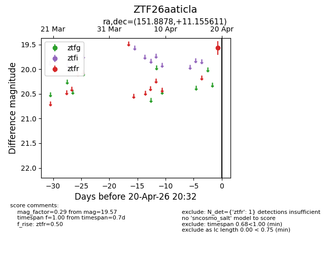
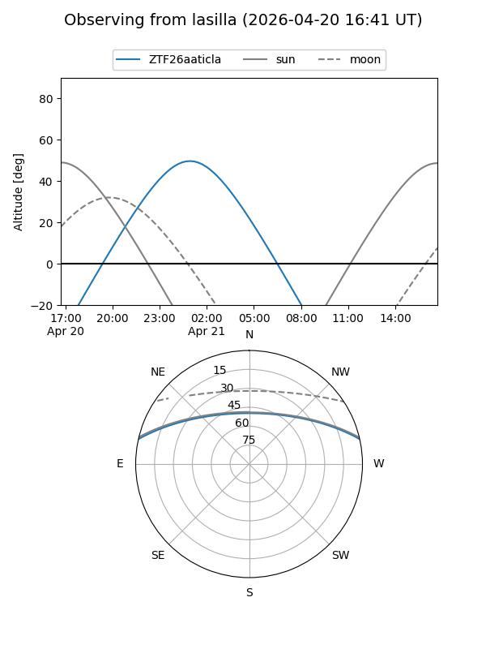
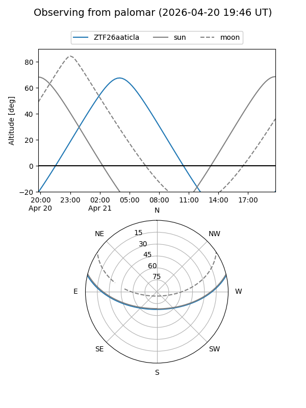

ZTF26aaticla
Target ZTF26aaticla at 2026-04-20 20:42
Aliases and brokers:
FINK: link
Lasair: link
ALeRCE: link
alt names
ZTF26aaticla (ztf,fink_ztf)
Coordinates:
equatorial (ra, dec) = 151.8878,+11.15561
equatorial (HMS+DMS) = 10:07:33.06,+11:09:20.20
galactic (l, b) = (227.3668,+48.37387)
Flags:
Photometry:
last ztfr=19.57
1 ztfr detections
Lightcurve

Visibility


Additional plots